Análisis exploratorio de datos (EDA)#
# Importamos librerias a utilizar
import pandas as pd
import numpy as np
import matplotlib.pyplot as plt
import seaborn as sns
import geopandas as gpd
import statsmodels.api as sm
import geopandas as gpd
from datetime import datetime
import plotly.express as px
import folium
import pingouin as pg
import plotly.graph_objects as go
from statsmodels.stats.outliers_influence import variance_inflation_factor
from scipy.stats import kstest, jarque_bera
from scipy.stats import zscore
from statsmodels.graphics.tsaplots import plot_acf
from statsmodels.graphics.tsaplots import plot_pacf
from statsmodels.tsa.stattools import adfuller
from statsmodels.tsa.stattools import kpss
from statsmodels.tsa.stattools import ccf
from esda.moran import Moran
from libpysal.weights import KNN
# importamos datos
filename = 'C:/Users/luis_/Desktop\MaestriaEstadisticaAplicada/\_8MachineLearning\proyecto_ml\datos\datos_oleaje.xlsx'
data = pd.read_excel(filename)
# Convertimos la fecha y hora al formato formato adecuado
data['date_time'] = pd.to_datetime(data['date_time'], format='%Y%m%d%H%M%S')
# Haciendo que el index sean las mismas fechas
data.index = data['date_time']
# Creando columna de inicio de mes
data['Start_Month'] = data['date_time'].dt.to_period('M').dt.to_timestamp()
# Creando columna de inicio de año
data['year'] = data['date_time'].dt.year
1. Introducción y contexto#
Los datos utilizados en esta investigación son datos tomados por la constelación de satélites Sentinel-3, desarrollada por la Agencia Espacial Europea (ESA) como parte del Programa Copérnico. Los datos corresponden a las misiones Sentinel 3AB para la región del Reino Unido. En la tabla 1 se puede ver una descripción de las variables contenidas en el conjunto de datos. Los registros se realizaron desde el 7 de abrid del 2016 hasta el 31 de diciembre del 2021.
1.1 Descripción de las variables#
Nombre de la Variable |
Descripción |
Unidad |
|---|---|---|
lat |
Latitud |
Grados |
lon |
Longitud |
Grados |
Hs |
Altura significativa del oleaje |
Metros |
T |
Periodo |
Segundos |
P |
Potencial energético del oleaje |
kW/m |
uo |
Componente u de la corriente |
m/s |
vo |
Componente v de la corriente |
m/s |
mwd |
Dirección media del oleaje |
Grados |
date_time |
Fecha y hora de la medición |
Fecha y hora |
2. Análisis preliminar#
2.1. Inspección general#
data.info()
<class 'pandas.core.frame.DataFrame'>
DatetimeIndex: 133291 entries, 2016-04-14 21:16:02 to 2021-12-20 20:54:59
Data columns (total 11 columns):
# Column Non-Null Count Dtype
--- ------ -------------- -----
0 lat 133291 non-null float64
1 lon 133291 non-null float64
2 Hs 133291 non-null float64
3 T 133291 non-null float64
4 P 133291 non-null float64
5 uo 133291 non-null float64
6 vo 133291 non-null float64
7 mwd 133291 non-null float64
8 date_time 133291 non-null datetime64[ns]
9 Start_Month 133291 non-null datetime64[ns]
10 year 133291 non-null int32
dtypes: datetime64[ns](2), float64(8), int32(1)
memory usage: 11.7 MB
2.2. Estádisticas descriptivas#
pd.options.display.float_format = '{:.4f}'.format
# Resumen estadístico
df_resumen = data.iloc[:, 2:8].describe()
df_resumen.loc['Kurtosis'] = data.iloc[:, 2:8].kurt()
df_resumen.loc['Skewness'] = data.iloc[:, 2:8].skew()
display(df_resumen)
| Hs | T | P | uo | vo | mwd | |
|---|---|---|---|---|---|---|
| count | 133291.0000 | 133291.0000 | 133291.0000 | 133291.0000 | 133291.0000 | 133291.0000 |
| mean | 1.4754 | 4.7114 | 10205.6716 | 0.0337 | -0.0001 | 201.7403 |
| std | 0.9404 | 1.1128 | 16944.3120 | 0.3089 | 0.3475 | 113.2398 |
| min | 0.0000 | 0.4200 | 0.0000 | -0.9200 | -1.1000 | 0.1000 |
| 25% | 0.8200 | 4.0700 | 1603.0000 | -0.1700 | -0.1800 | 92.1700 |
| 50% | 1.2900 | 4.7500 | 4562.4100 | 0.0300 | 0.0100 | 224.7100 |
| 75% | 1.9400 | 5.4000 | 11635.0750 | 0.2300 | 0.2000 | 299.6600 |
| max | 10.1700 | 21.0000 | 1055994.9800 | 1.3900 | 1.1500 | 359.8000 |
| Kurtosis | 2.0828 | 3.8286 | 163.8318 | 1.3148 | 0.2849 | -1.1555 |
| Skewness | 1.1994 | 0.1735 | 6.7613 | 0.3779 | -0.1688 | -0.3891 |
3. Visualización de los datos#
# Histogramas de las variables numéricas
fig, axes = plt.subplots(figsize=(12, 10))
data.iloc[:, 2:8].hist(ax=axes, bins=30, edgecolor='black', grid=False)
plt.suptitle('Histogramas de las Variables', fontsize=16)
plt.show()
C:\Users\luis_\AppData\Local\Temp\ipykernel_8952\4232421614.py:3: UserWarning: To output multiple subplots, the figure containing the passed axes is being cleared.
data.iloc[:, 2:8].hist(ax=axes, bins=30, edgecolor='black', grid=False)
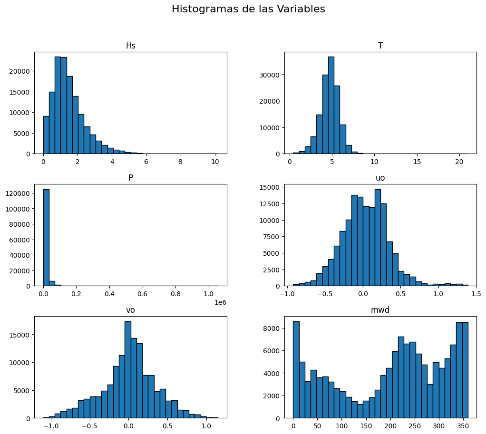
# Gráficos de caja y bigote
# Lista de variables numéricas
numeric_columns = ['Hs', 'T', 'P', 'uo', 'vo', 'mwd']
# Crear la figura con 3 filas y 2 columnas
fig, axes = plt.subplots(3, 2, figsize=(10, 10))
# Generar los boxplots en cada subgráfico
for ax, var in zip(axes.flat, numeric_columns):
sns.boxplot(y=data[var], ax=ax)
ax.set_title(f'Boxplot de {var}')
# Ajustar el diseño para mejor visualización
plt.tight_layout()
plt.show()
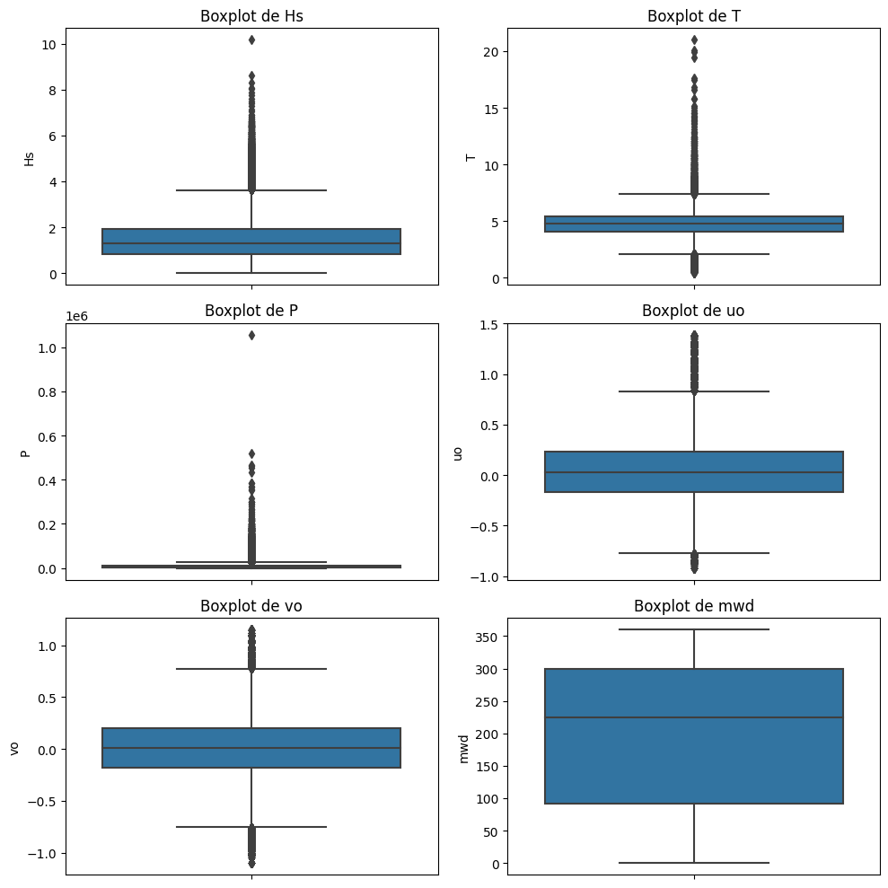
# Gráficos de violin
# Lista de variables numéricas
numeric_columns = ['Hs', 'T', 'P', 'uo', 'vo', 'mwd']
# Crear la figura con 3 filas y 2 columnas
fig, axes = plt.subplots(3, 2, figsize=(12, 10))
# Generar los gráficos de violín en cada subgráfico
for ax, var in zip(axes.flat, numeric_columns):
sns.violinplot(y=data[var], ax=ax)
ax.set_title(f'Gráfico de violín de {var}')
# Ajustar el diseño para mejor visualización
plt.tight_layout()
plt.show()
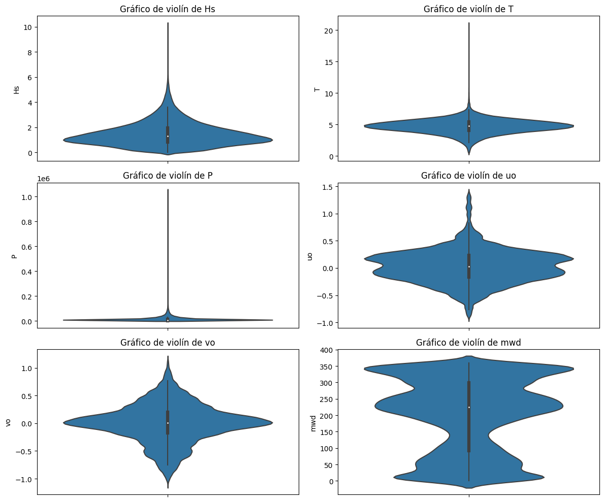
4. Análisis de las variables#
4.1 Análisis de correlación#
# Matriz de correlación
vars_numericas = ['Hs', 'T', 'P', 'uo', 'vo', 'mwd']
corr_kendall = data[vars_numericas].corr(method='kendall')
plt.figure(figsize=(10, 6))
sns.heatmap(corr_kendall, annot=True, cmap='Reds', fmt='.2f')
plt.title('Matriz de Correlación (Kendall)')
plt.show()
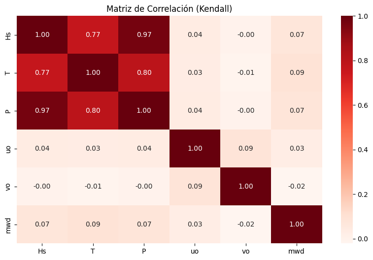
# se ordena los datos por tiempo
data1 = data.reset_index(drop=True)
data_sorted = data1.sort_values('date_time')
# Por ejemplo: correlación temporal entre Hs y P
serie_1 = data_sorted['Hs'].fillna(method='ffill')
serie_2 = data_sorted['P'].fillna(method='ffill')
# Calcular la función de correlación cruzada
correlation = ccf(serie_1, serie_2, adjusted=False)
# Graficar los desfases (lags)
lags = np.arange(len(correlation))
plt.figure(figsize=(10, 5))
plt.stem(lags, correlation, basefmt=" ")
plt.title('Correlación Cruzada entre Hs y P')
plt.xlabel('Desfase (lags)')
plt.ylabel('Correlación')
plt.grid(True)
plt.show()
C:\Users\luis_\AppData\Local\Temp\ipykernel_8952\2873907451.py:6: FutureWarning: Series.fillna with 'method' is deprecated and will raise in a future version. Use obj.ffill() or obj.bfill() instead.
serie_1 = data_sorted['Hs'].fillna(method='ffill')
C:\Users\luis_\AppData\Local\Temp\ipykernel_8952\2873907451.py:7: FutureWarning: Series.fillna with 'method' is deprecated and will raise in a future version. Use obj.ffill() or obj.bfill() instead.
serie_2 = data_sorted['P'].fillna(method='ffill')
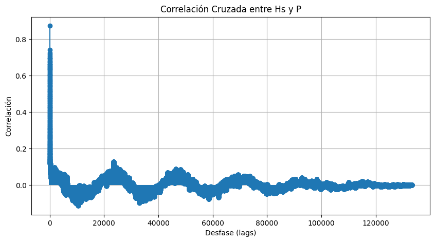
# Suponiendo que ya hiciste el promedio por localización
promedios = data.groupby(['lat', 'lon'])['P'].mean().reset_index()
# Crear GeoDataFrame para los promedios
gdf_promedios = gpd.GeoDataFrame(promedios, geometry=gpd.points_from_xy(promedios.lon, promedios['lat']))
# Matriz de pesos
from libpysal import weights
w = weights.KNN.from_dataframe(gdf_promedios, k=5)
# Calcular Moran's I
from esda.moran import Moran
moran = Moran(gdf_promedios['P'], w)
print(f"Moran's I: {moran.I:.4f}, p-value: {moran.p_sim:.4f}")
Moran's I: 0.4215, p-value: 0.0010
C:\Users\luis_\miniconda3\envs\ml_venv\lib\site-packages\libpysal\weights\weights.py:224: UserWarning: The weights matrix is not fully connected:
There are 44 disconnected components.
warnings.warn(message)
4.2 Pruebas de normalidad#
# Pruebas de normalidad de Kolmogorov-Smirnov
ks_results = data.iloc[:, 2:8].apply(lambda x: kstest(x.dropna(), 'norm')) # Estadístico y p-valor
ks_results
| Hs | T | P | uo | vo | mwd | |
|---|---|---|---|---|---|---|
| 0 | 0.5789 | 0.9664 | 0.9900 | 0.2765 | 0.2379 | 0.9813 |
| 1 | 0.0000 | 0.0000 | 0.0000 | 0.0000 | 0.0000 | 0.0000 |
# Pruebas de normalidad de Jarque-Bera
jb_results = data.iloc[:, 2:8].apply(lambda x: jarque_bera(x.dropna())) # Estadístico y p-valor
jb_results
| Hs | T | P | uo | vo | mwd | |
|---|---|---|---|---|---|---|
| 0 | 56044.7807 | 82068.3666 | 150072791.5776 | 12771.3964 | 1083.9528 | 10778.2187 |
| 1 | 0.0000 | 0.0000 | 0.0000 | 0.0000 | 0.0000 | 0.0000 |
4.3 Análisis de multicolinealidad#
# Análisis de Multicolinealidad
X = data.drop(columns=['lat', 'lon', 'date_time', 'P', 'year', 'Start_Month']).dropna()
vif_data = pd.DataFrame()
vif_data['Variable'] = X.columns
vif_data['VIF'] = [variance_inflation_factor(X.values, i) for i in range(X.shape[1])]
display(vif_data)
| Variable | VIF | |
|---|---|---|
| 0 | Hs | 7.0348 |
| 1 | T | 11.2323 |
| 2 | uo | 1.0379 |
| 3 | vo | 1.0202 |
| 4 | mwd | 3.9944 |
# Eliminando periodo
X = data.drop(columns=['lat', 'lon', 'date_time', 'P', 'T', 'year', 'Start_Month']).dropna()
vif_data = pd.DataFrame()
vif_data['Variable'] = X.columns
vif_data['VIF'] = [variance_inflation_factor(X.values, i) for i in range(X.shape[1])]
display(vif_data)
| Variable | VIF | |
|---|---|---|
| 0 | Hs | 2.4380 |
| 1 | uo | 1.0370 |
| 2 | vo | 1.0202 |
| 3 | mwd | 2.4398 |
4.3 Análisis de valores extremos#
# Función para detectar valores atípicos usando Z-score
def detectar_outliers_zscore(data, columnas, umbral=3):
outliers = {}
for col in columnas:
z_scores = zscore(data[col].dropna()) # Calcular Z-score, ignorando NaN
outliers[col] = data.iloc[np.where(np.abs(z_scores) > umbral)][col]
return outliers
# Aplicar el análisis a las variables numéricas
outliers_detectados_z = detectar_outliers_zscore(data, numeric_columns)
# Mostrar cantidad de valores atípicos por variable
outliers_resumen_z = {col: len(outliers_detectados_z[col]) for col in numeric_columns}
print("Cantidad de valores atípicos por variable (Z-score > 3):")
display(pd.DataFrame.from_dict(outliers_resumen_z, orient='index', columns=['Número de outliers']))
# Mostrar ejemplos de valores atípicos detectados
for col, outliers in outliers_detectados_z.items():
if not outliers.empty:
print(f"\nEjemplos de valores atípicos en {col}:")
display(outliers.head(10))
Cantidad de valores atípicos por variable (Z-score > 3):
| Número de outliers | |
|---|---|
| Hs | 1809 |
| T | 1133 |
| P | 2758 |
| uo | 1508 |
| vo | 178 |
| mwd | 0 |
Ejemplos de valores atípicos en Hs:
date_time
2016-06-15 21:08:58 5.0700
2016-06-15 21:08:58 4.4000
2016-06-15 21:08:58 4.9600
2016-06-15 21:08:58 5.0400
2016-06-23 21:01:45 4.6800
2016-06-23 21:01:45 6.5400
2016-06-23 21:01:45 4.3500
2016-06-23 21:01:46 4.7400
2016-06-23 21:01:46 5.2500
2016-06-23 21:01:46 8.6300
Name: Hs, dtype: float64
Ejemplos de valores atípicos en T:
date_time
2016-04-14 21:16:04 0.9200
2016-04-14 21:16:04 1.0600
2016-04-14 21:16:05 0.4500
2016-04-08 10:45:52 0.9300
2016-04-08 10:45:53 0.4800
2016-04-12 10:42:12 1.2100
2016-05-15 21:12:29 0.5900
2016-05-15 21:12:30 0.9500
2016-05-15 21:12:31 0.8300
2016-05-05 10:45:54 1.2400
Name: T, dtype: float64
Ejemplos de valores atípicos en P:
date_time
2016-06-01 10:45:54 65067.6800
2016-06-15 21:08:58 183079.0000
2016-06-15 21:08:58 129326.6300
2016-06-15 21:08:58 173860.1400
2016-06-15 21:08:58 181972.2100
2016-06-15 21:08:58 64961.2600
2016-06-15 21:08:58 68865.9900
2016-06-23 21:01:45 124564.2600
2016-06-23 21:01:45 262232.7400
2016-06-23 21:01:45 101387.4400
Name: P, dtype: float64
Ejemplos de valores atípicos en uo:
date_time
2016-06-09 10:38:32 1.1600
2016-06-09 10:38:32 1.1600
2016-06-09 10:38:33 1.1600
2016-06-09 10:38:33 1.1600
2016-06-09 10:38:33 1.1600
2016-06-09 10:38:33 1.1600
2016-06-09 10:38:33 1.1600
2016-06-09 10:38:33 1.1600
2016-06-09 10:38:33 1.1600
2016-06-09 10:38:33 1.1600
Name: uo, dtype: float64
Ejemplos de valores atípicos en vo:
date_time
2016-08-21 10:45:55 1.0800
2016-08-21 10:45:55 1.0800
2016-08-21 10:45:55 1.0800
2016-08-21 10:45:55 1.0900
2016-08-21 10:45:55 1.0900
2016-08-21 10:45:55 1.0900
2016-08-21 10:45:55 1.0900
2016-08-21 10:45:55 1.0900
2016-08-21 10:45:55 1.0900
2016-08-21 10:45:55 1.0900
Name: vo, dtype: float64
5. Análisis Temporal#
5.1 Altura significativa del oleaje (Hs)#
5.1.1 Visualización de la serie#
# Creando tabla de mes y promedio diario de hs
hs_monthly_avg = data.groupby('Start_Month')['Hs'].mean().reset_index()
# Creo una figura con 1 fila y 2 columnas
fig, axes = plt.subplots(1, 2, figsize=(12, 4))
# Gráfica de línea 1, serie sin agrupar
axes[0].plot(data['date_time'], data['Hs'])
axes[0].set_xlabel("Fecha (original)")
axes[0].set_ylabel("velocidad del viento")
# Gráfica de línea 2, serie agrupada por mes
axes[1].plot(hs_monthly_avg['Start_Month'], hs_monthly_avg['Hs'])
axes[1].set_xlabel("Fecha (Mes)")
axes[1].set_ylabel("velocidad del viento por mes")
Text(0, 0.5, 'velocidad del viento por mes')
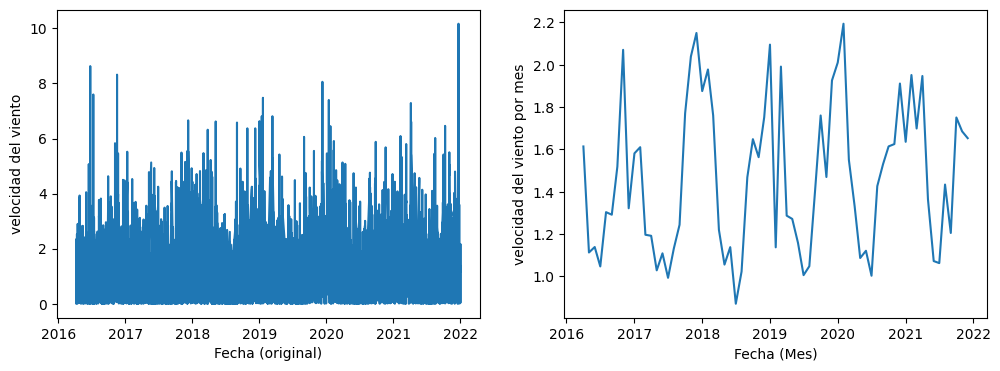
5.1.2 Análisis de patrones recurrentes#
# Creando tabla de fecha díaria y promedio diario de la altura de la ola
hs_daily_avg = data.groupby(data['date_time'].dt.date)['Hs'].mean().reset_index()
# Gráfica de autocorrelación y autocorrelación parcial de la serie
# Creo una figura con 1 fila y 2 columnas
fig, axes = plt.subplots(1, 2, figsize=(10, 4))
# Gráfica de autocorrelación
plot_acf(hs_daily_avg['Hs'], lags=31, ax=axes[0])
axes[0].set_xlabel("Lags")
axes[0].set_ylabel("Autocorrelación por día")
# Gráfica de autocorrelación parcial
plot_pacf(hs_daily_avg['Hs'], lags=31, ax=axes[1])
axes[1].set_xlabel("Lags")
axes[1].set_ylabel("Autocorrelación parcial por día")
plt.tight_layout()
plt.show()
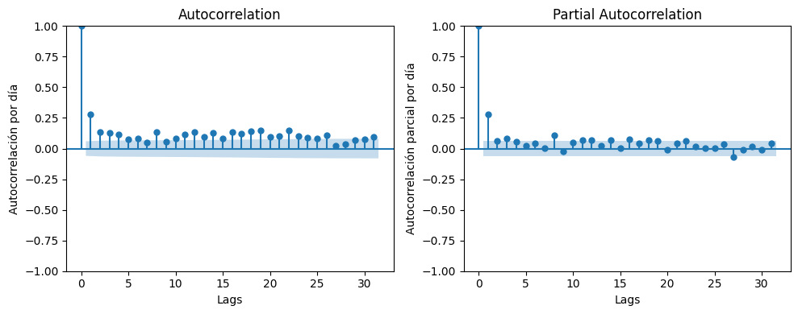
# Gráfica de caja y bigote
plt.figure(figsize=(12, 8))
sns.boxplot(x=data['year'], y=data['Hs'])
plt.xlabel("Año")
plt.ylabel("Altura significativa del oleaje (m)")
plt.show()
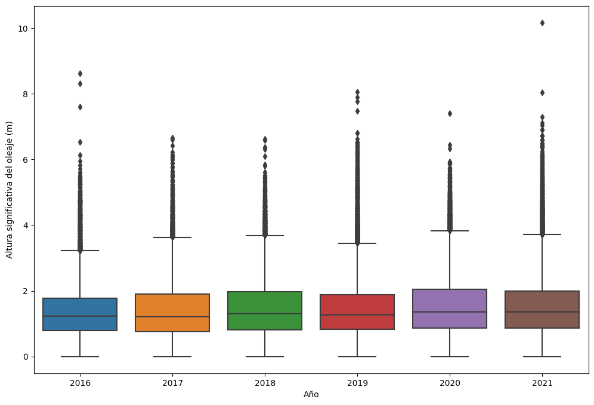
5.1.3 Análisis de estacionariedad#
# Prueba de Dickey-Fuller aumentado (ADF)
adf_result = adfuller(data['Hs'], autolag='AIC')
print("ADF Statistic:", adf_result[0])
print("p-value:", adf_result[1])
print("Critical Values:", adf_result[4])
ADF Statistic: -25.245688959965875
p-value: 0.0
Critical Values: {'1%': -3.430399070107094, '5%': -2.8615616882782167, '10%': -2.566781543901176}
# Prueba de KPSS
kpss_result = kpss(data['Hs'], regression='c', nlags="auto")
# Print the results
print("KPSS Statistic:", kpss_result[0])
print("p-value:", kpss_result[1])
print("Critical Values:", kpss_result[3])
KPSS Statistic: 0.6856570222659727
p-value: 0.0148493616121843
Critical Values: {'10%': 0.347, '5%': 0.463, '2.5%': 0.574, '1%': 0.739}
# Aplicando diferenciación
first_order_diff = data['Hs'].diff(1)
# Gráfica de la seria con datos diferenciados
plt.plot( first_order_diff.index, first_order_diff.values)
[<matplotlib.lines.Line2D at 0x2014e389070>]
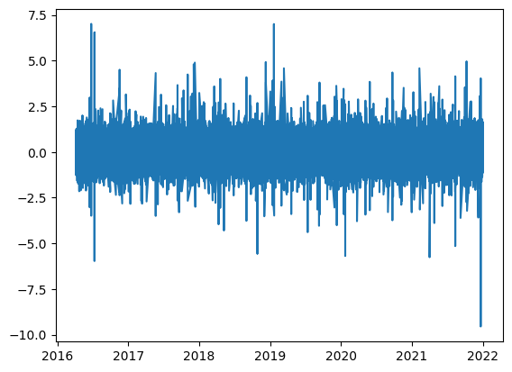
# Realizando prueba de ADF con los datos diferenciados
adf_result = adfuller(first_order_diff.iloc[1:], autolag='AIC')
print("ADF Statistic:", adf_result[0])
print("p-value:", adf_result[1])
print("Critical Values:", adf_result[4])
ADF Statistic: -53.80092724818402
p-value: 0.0
Critical Values: {'1%': -3.4303990848401593, '5%': -2.8615616947899647, '10%': -2.5667815473671576}
# Realizando prueba de KPSS con los datos diferenciados
kpss_result = kpss(first_order_diff.iloc[1:], regression='c', nlags="auto")
# Print the results
print("KPSS Statistic:", kpss_result[0])
print("p-value:", kpss_result[1])
print("Critical Values:", kpss_result[3])
KPSS Statistic: 0.002067868529868625
p-value: 0.1
Critical Values: {'10%': 0.347, '5%': 0.463, '2.5%': 0.574, '1%': 0.739}
C:\Users\luis_\AppData\Local\Temp\ipykernel_8952\403408010.py:2: InterpolationWarning: The test statistic is outside of the range of p-values available in the
look-up table. The actual p-value is greater than the p-value returned.
kpss_result = kpss(first_order_diff.iloc[1:], regression='c', nlags="auto")
5.2 Periodo (T)#
5.2.1 Visualización de la serie#
# Creando tabla de mes y promedio diario del periodo
T_monthly_avg = data.groupby('Start_Month')['T'].mean().reset_index()
# Creo una figura con 1 fila y 2 columnas
fig, axes = plt.subplots(1, 2, figsize=(12, 4))
# Gráfica de línea 1, serie sin agrupar
axes[0].plot(data['date_time'], data['T'])
axes[0].set_xlabel("Fecha (original)")
axes[0].set_ylabel("Periodo")
# Gráfica de línea 2, serie agrupada por mes
axes[1].plot(T_monthly_avg['Start_Month'], T_monthly_avg['T'])
axes[1].set_xlabel("Fecha (Mes)")
axes[1].set_ylabel("Periodo por mes")
Text(0, 0.5, 'Periodo por mes')
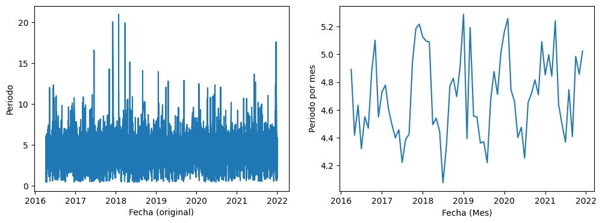
5.1.2 Análisis de patrones recurrentes#
# Creando tabla de fecha díaria y promedio diario del periodo
T_daily_avg = data.groupby(data['date_time'].dt.date)['T'].mean().reset_index()
# Gráfica de autocorrelación y autocorrelación parcial de la serie
# Creo una figura con 1 fila y 2 columnas
fig, axes = plt.subplots(1, 2, figsize=(10, 4))
# Gráfica de autocorrelación
plot_acf(T_daily_avg['T'], lags=31, ax=axes[0])
axes[0].set_xlabel("Lags")
axes[0].set_ylabel("Autocorrelación por día")
# Gráfica de autocorrelación parcial
plot_pacf(T_daily_avg['T'], lags=31, ax=axes[1])
axes[1].set_xlabel("Lags")
axes[1].set_ylabel("Autocorrelación parcial por día")
plt.tight_layout()
plt.show()
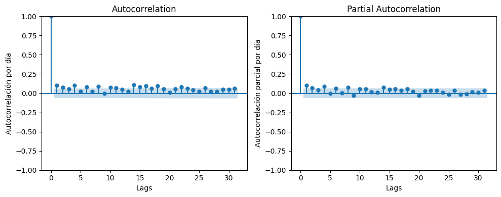
# Gráfica de caja y bigote
plt.figure(figsize=(12, 8))
sns.boxplot(x=data['year'], y=data['Hs'])
plt.xlabel("Año")
plt.ylabel("Periodo")
plt.show()
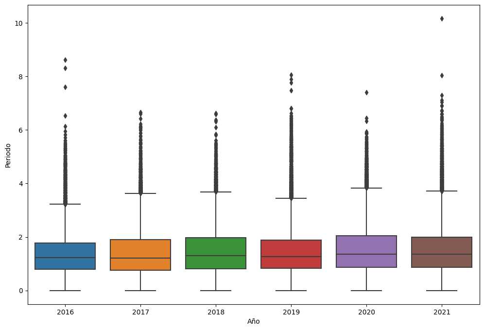
5.2.3 Análisis de estacionariedad#
# Prueba de Dickey-Fuller aumentado (ADF)
adf_result = adfuller(data['T'], autolag='AIC')
print("ADF Statistic:", adf_result[0])
print("p-value:", adf_result[1])
print("Critical Values:", adf_result[4])
ADF Statistic: -32.15586531681992
p-value: 0.0
Critical Values: {'1%': -3.430399071211767, '5%': -2.861561688766462, '10%': -2.5667815441610524}
# Prueba de KPSS
kpss_result = kpss(data['T'], regression='c', nlags="auto")
# Print the results
print("KPSS Statistic:", kpss_result[0])
print("p-value:", kpss_result[1])
print("Critical Values:", kpss_result[3])
KPSS Statistic: 0.5680205776543259
p-value: 0.026346716744521187
Critical Values: {'10%': 0.347, '5%': 0.463, '2.5%': 0.574, '1%': 0.739}
# Aplicando diferenciación
first_order_diff = data['T'].diff(1)
# Gráfica de la seria con datos diferenciados
plt.plot( first_order_diff.index, first_order_diff.values)
[<matplotlib.lines.Line2D at 0x2015134d190>]
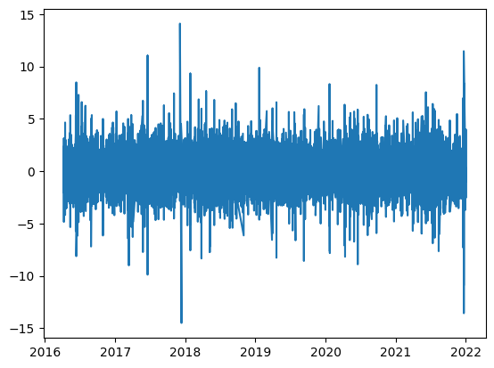
# Realizando prueba de ADF con los datos diferenciados
adf_result = adfuller(first_order_diff.iloc[1:], autolag='AIC')
print("ADF Statistic:", adf_result[0])
print("p-value:", adf_result[1])
print("Critical Values:", adf_result[4])
ADF Statistic: -59.592493330829335
p-value: 0.0
Critical Values: {'1%': -3.4303990852085993, '5%': -2.8615616949528087, '10%': -2.566781547453834}
# Realizando prueba de KPSS con los datos diferenciados
kpss_result = kpss(first_order_diff.iloc[1:], regression='c', nlags="auto")
# Print the results
print("KPSS Statistic:", kpss_result[0])
print("p-value:", kpss_result[1])
print("Critical Values:", kpss_result[3])
KPSS Statistic: 0.0023626251740812764
p-value: 0.1
Critical Values: {'10%': 0.347, '5%': 0.463, '2.5%': 0.574, '1%': 0.739}
C:\Users\luis_\AppData\Local\Temp\ipykernel_8952\403408010.py:2: InterpolationWarning: The test statistic is outside of the range of p-values available in the
look-up table. The actual p-value is greater than the p-value returned.
kpss_result = kpss(first_order_diff.iloc[1:], regression='c', nlags="auto")
5.3 Potencial energético del oleaje (P)#
5.3.1 Visualización de la serie#
# Creando tabla de mes y promedio diario de hs
P_monthly_avg = data.groupby('Start_Month')['P'].mean().reset_index()
# Creo una figura con 1 fila y 2 columnas
fig, axes = plt.subplots(1, 2, figsize=(12, 4))
# Gráfica de línea 1, serie sin agrupar
axes[0].plot(data['date_time'], data['P'])
axes[0].set_xlabel("Fecha (original)")
axes[0].set_ylabel("Potencial")
# Gráfica de línea 2, serie agrupada por mes
axes[1].plot(P_monthly_avg['Start_Month'], P_monthly_avg['P'])
axes[1].set_xlabel("Fecha (Mes)")
axes[1].set_ylabel("Potencial por mes")
Text(0, 0.5, 'Potencial por mes')
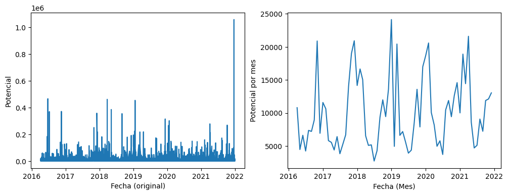
5.3.2 Análisis de patrones recurrentes#
# Creando tabla de fecha díaria y promedio diario del potencial
P_daily_avg = data.groupby(data['date_time'].dt.date)['P'].mean().reset_index()
# Gráfica de autocorrelación y autocorrelación parcial de la serie
# Creo una figura con 1 fila y 2 columnas
fig, axes = plt.subplots(1, 2, figsize=(10, 4))
# Gráfica de autocorrelación
plot_acf(P_daily_avg['P'], lags=31, ax=axes[0])
axes[0].set_xlabel("Lags")
axes[0].set_ylabel("Autocorrelación por día")
# Gráfica de autocorrelación parcial
plot_pacf(P_daily_avg['P'], lags=31, ax=axes[1])
axes[1].set_xlabel("Lags")
axes[1].set_ylabel("Autocorrelación parcial por día")
plt.tight_layout()
plt.show()
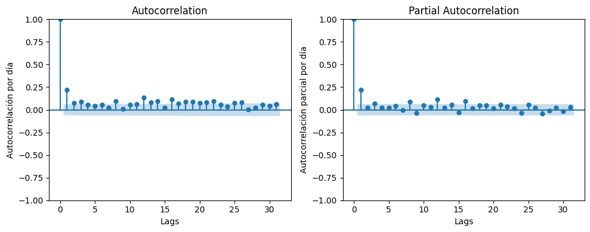
# Gráfica de caja y bigote
plt.figure(figsize=(12, 8))
sns.boxplot(x=data['year'], y=data['P'])
plt.xlabel("Año")
plt.ylabel("Potencial")
plt.show()
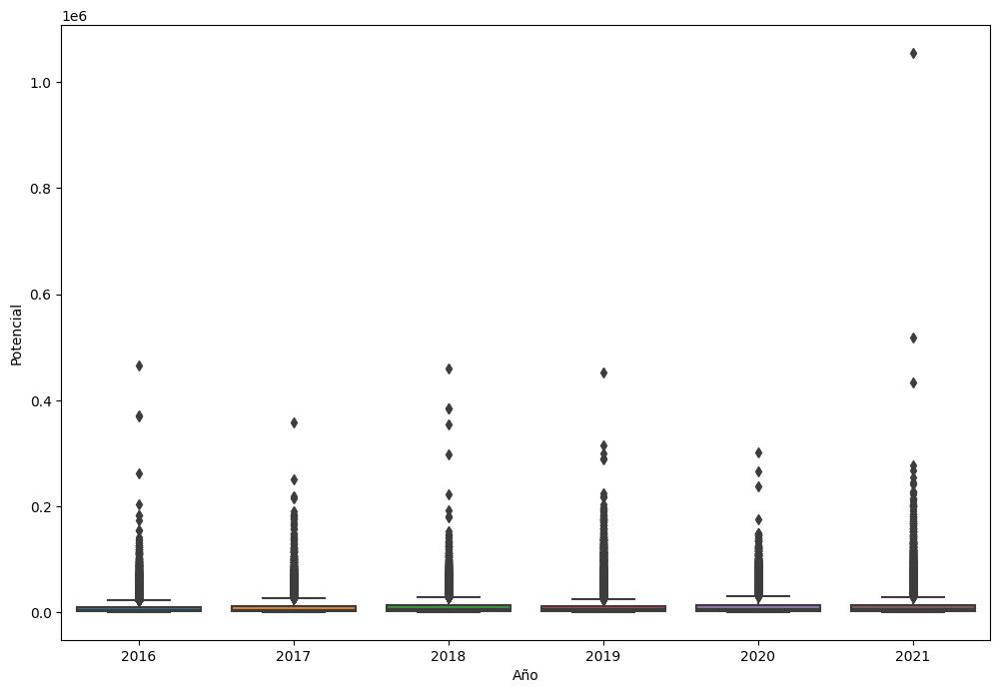
5.3.3 Análisis de estacionariedad#
# Prueba de Dickey-Fuller aumentado (ADF)
adf_result = adfuller(data['P'], autolag='AIC')
print("ADF Statistic:", adf_result[0])
print("p-value:", adf_result[1])
print("Critical Values:", adf_result[4])
ADF Statistic: -24.86406629829458
p-value: 0.0
Critical Values: {'1%': -3.430399085577045, '5%': -2.861561695115655, '10%': -2.5667815475405114}
# Prueba de KPSS
kpss_result = kpss(data['P'], regression='c', nlags="auto")
# Print the results
print("KPSS Statistic:", kpss_result[0])
print("p-value:", kpss_result[1])
print("Critical Values:", kpss_result[3])
KPSS Statistic: 0.5450372469948535
p-value: 0.031523142568726695
Critical Values: {'10%': 0.347, '5%': 0.463, '2.5%': 0.574, '1%': 0.739}
# Aplicando diferenciación
first_order_diff = data['P'].diff(1)
# Gráfica de la seria con datos diferenciados
plt.plot( first_order_diff.index, first_order_diff.values)
[<matplotlib.lines.Line2D at 0x20154199d90>]
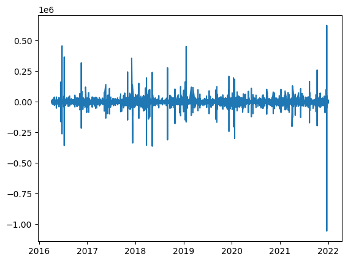
# Realizando prueba de ADF con los datos diferenciados
adf_result = adfuller(first_order_diff.iloc[1:], autolag='AIC')
print("ADF Statistic:", adf_result[0])
print("p-value:", adf_result[1])
print("Critical Values:", adf_result[4])
ADF Statistic: -55.2806373106165
p-value: 0.0
Critical Values: {'1%': -3.4303990848401593, '5%': -2.8615616947899647, '10%': -2.5667815473671576}
# Realizando prueba de KPSS con los datos diferenciados
kpss_result = kpss(first_order_diff.iloc[1:], regression='c', nlags="auto")
# Print the results
print("KPSS Statistic:", kpss_result[0])
print("p-value:", kpss_result[1])
print("Critical Values:", kpss_result[3])
KPSS Statistic: 0.004930408504767011
p-value: 0.1
Critical Values: {'10%': 0.347, '5%': 0.463, '2.5%': 0.574, '1%': 0.739}
C:\Users\luis_\AppData\Local\Temp\ipykernel_8952\403408010.py:2: InterpolationWarning: The test statistic is outside of the range of p-values available in the
look-up table. The actual p-value is greater than the p-value returned.
kpss_result = kpss(first_order_diff.iloc[1:], regression='c', nlags="auto")
5.4 Corriente#
5.4.1 Visualización de la serie#
# Creando tabla de mes y promedio diario de ambas componentes de la corriente
u_monthly_avg = data.groupby('Start_Month')['uo'].mean().reset_index()
v_monthly_avg = data.groupby('Start_Month')['vo'].mean().reset_index()
# Creo una figura con 1 fila y 2 columnas
fig, axes = plt.subplots(1, 2, figsize=(12, 4))
# Gráfica de línea 1, serie sin agrupar
axes[0].plot(data['date_time'], data['uo'])
axes[0].set_xlabel("Fecha (original)")
axes[0].set_ylabel("componente u de la corriente")
# Gráfica de línea 2, serie agrupada por mes
axes[1].plot(u_monthly_avg['Start_Month'], u_monthly_avg['uo'])
axes[1].set_xlabel("Fecha (Mes)")
axes[1].set_ylabel("componente u de la corriente por mes")
Text(0, 0.5, 'componente u de la corriente por mes')
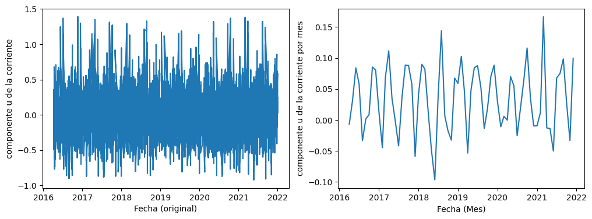
# Creo una figura con 1 fila y 2 columnas
fig, axes = plt.subplots(1, 2, figsize=(12, 4))
# Gráfica de línea 1, serie sin agrupar
axes[0].plot(data['date_time'], data['vo'])
axes[0].set_xlabel("Fecha (original)")
axes[0].set_ylabel("componente v de la corriente")
# Gráfica de línea 2, serie agrupada por mes
axes[1].plot(v_monthly_avg['Start_Month'], v_monthly_avg['vo'])
axes[1].set_xlabel("Fecha (Mes)")
axes[1].set_ylabel("componente v de la corriente por mes")
Text(0, 0.5, 'componente v de la corriente por mes')
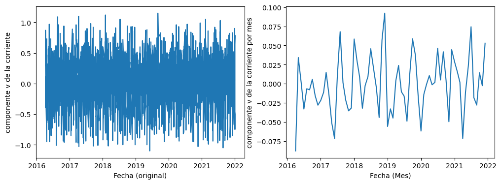
5.4.2 Análisis de patrones recurrentes#
# Creando tabla de fecha díaria y promedio diario de la corriente
u_daily_avg = data.groupby(data['date_time'].dt.date)['uo'].mean().reset_index()
v_daily_avg = data.groupby(data['date_time'].dt.date)['vo'].mean().reset_index()
# Gráfica de autocorrelación y autocorrelación parcial de la serie
# Creo una figura con 1 fila y 2 columnas
fig, axes = plt.subplots(1, 2, figsize=(10, 4))
# Gráfica de autocorrelación
plot_acf(u_daily_avg['uo'], lags=31, ax=axes[0])
axes[0].set_xlabel("Lags")
axes[0].set_ylabel("Autocorrelación por día")
# Gráfica de autocorrelación parcial
plot_pacf(u_daily_avg['uo'], lags=31, ax=axes[1])
axes[1].set_xlabel("Lags")
axes[1].set_ylabel("Autocorrelación parcial por día")
plt.tight_layout()
plt.show()
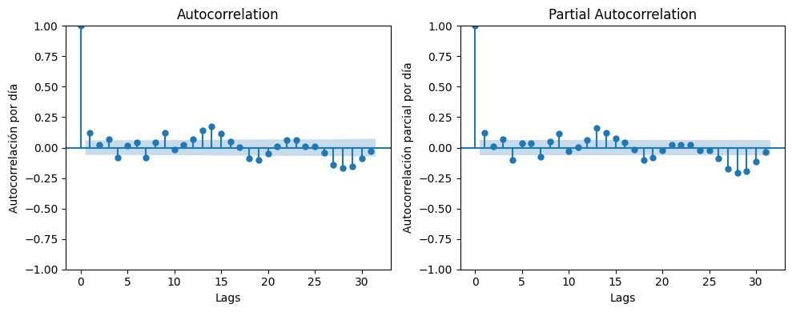
# Gráfica de autocorrelación y autocorrelación parcial de la serie
# Creo una figura con 1 fila y 2 columnas
fig, axes = plt.subplots(1, 2, figsize=(10, 4))
# Gráfica de autocorrelación
plot_acf(v_daily_avg['vo'], lags=31, ax=axes[0])
axes[0].set_xlabel("Lags")
axes[0].set_ylabel("Autocorrelación por día")
# Gráfica de autocorrelación parcial
plot_pacf(v_daily_avg['vo'], lags=31, ax=axes[1])
axes[1].set_xlabel("Lags")
axes[1].set_ylabel("Autocorrelación parcial por día")
plt.tight_layout()
plt.show()
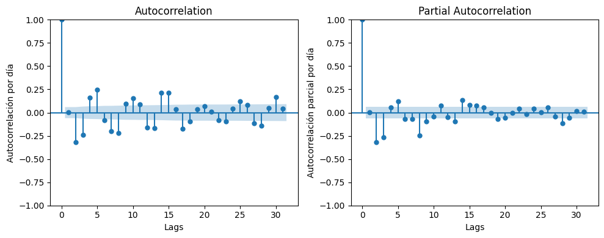
# Gráfica de caja y bigote
plt.figure(figsize=(12, 8))
sns.boxplot(x=data['year'], y=data['uo'])
plt.xlabel("Año")
plt.ylabel("componente u de la corriente")
plt.show()
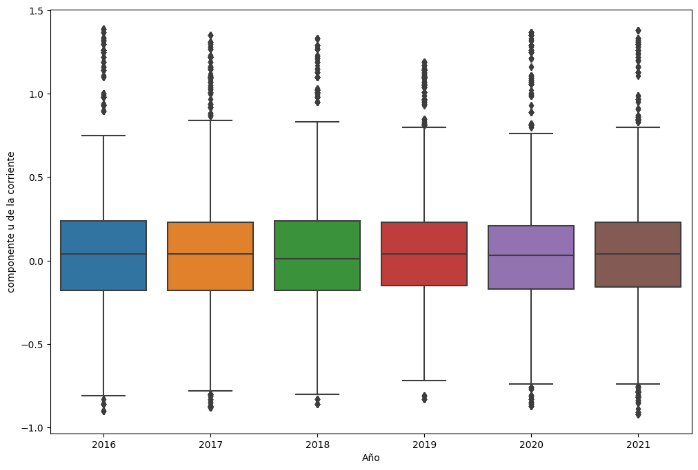
# Gráfica de caja y bigote
plt.figure(figsize=(12, 8))
sns.boxplot(x=data['year'], y=data['vo'])
plt.xlabel("Año")
plt.ylabel("componente v de la corriente")
plt.show()
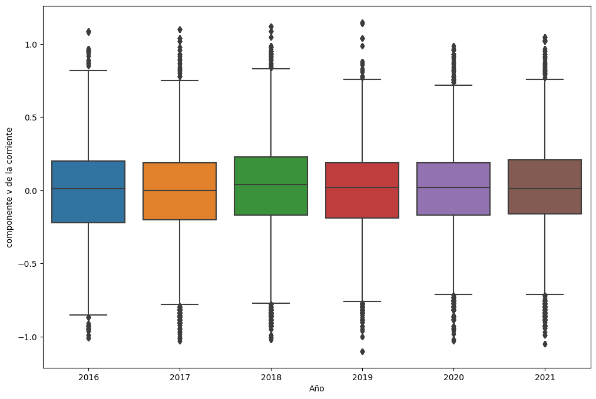
5.4.3 Análisis de estacionariedad#
# Prueba de Dickey-Fuller aumentado (ADF) para la componente u
adf_result = adfuller(data['uo'], autolag='AIC')
print("ADF Statistic:", adf_result[0])
print("p-value:", adf_result[1])
print("Critical Values:", adf_result[4])
ADF Statistic: -31.2225408612443
p-value: 0.0
Critical Values: {'1%': -3.430399084471725, '5%': -2.8615616946271234, '10%': -2.566781547280483}
# Prueba de KPSS para la componente u
kpss_result = kpss(data['uo'], regression='c', nlags="auto")
# Print the results
print("KPSS Statistic:", kpss_result[0])
print("p-value:", kpss_result[1])
print("Critical Values:", kpss_result[3])
KPSS Statistic: 0.024877587318428786
p-value: 0.1
Critical Values: {'10%': 0.347, '5%': 0.463, '2.5%': 0.574, '1%': 0.739}
C:\Users\luis_\AppData\Local\Temp\ipykernel_8952\150963581.py:2: InterpolationWarning: The test statistic is outside of the range of p-values available in the
look-up table. The actual p-value is greater than the p-value returned.
kpss_result = kpss(data['uo'], regression='c', nlags="auto")
# Prueba de Dickey-Fuller aumentado (ADF) para la componente v
adf_result = adfuller(data['vo'], autolag='AIC')
print("ADF Statistic:", adf_result[0])
print("p-value:", adf_result[1])
print("Critical Values:", adf_result[4])
ADF Statistic: -31.772678062471805
p-value: 0.0
Critical Values: {'1%': -3.4303990870508825, '5%': -2.861561695767064, '10%': -2.5667815478872344}
# Prueba de KPSS para la componente v
kpss_result = kpss(data['vo'], regression='c', nlags="auto")
# Print the results
print("KPSS Statistic:", kpss_result[0])
print("p-value:", kpss_result[1])
print("Critical Values:", kpss_result[3])
KPSS Statistic: 0.07469873911311779
p-value: 0.1
Critical Values: {'10%': 0.347, '5%': 0.463, '2.5%': 0.574, '1%': 0.739}
C:\Users\luis_\AppData\Local\Temp\ipykernel_8952\2564468217.py:2: InterpolationWarning: The test statistic is outside of the range of p-values available in the
look-up table. The actual p-value is greater than the p-value returned.
kpss_result = kpss(data['vo'], regression='c', nlags="auto")
6. Análisis Espacial#
# Mapa de puntos con geopandas (solo Reino Unido)
world = gpd.read_file("https://naturalearth.s3.amazonaws.com/110m_cultural/ne_110m_admin_0_countries.zip")
uk = world[world['ADMIN'] == "United Kingdom"]
gdf = gpd.GeoDataFrame(data, geometry=gpd.points_from_xy(data.lon, data['lat']))
fig, ax = plt.subplots(figsize=(10, 6))
uk.plot(ax=ax, color='lightgray', edgecolor='black')
gdf.plot(ax=ax, marker='o', markersize=10, color='red', alpha=0.6)
plt.title('Ubicación Geográfica de las Mediciones en Reino Unido')
plt.xlabel('Longitud')
plt.ylabel('Latitud')
plt.show()
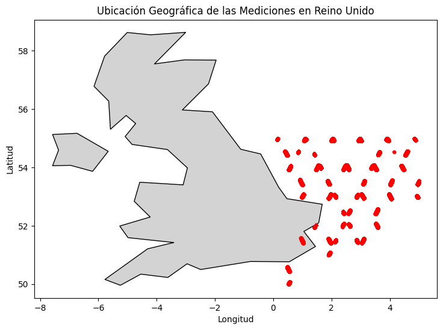
# Gráfico de burbujas basado en el promedio del potencial energético
mean_potential = data.groupby(['lat', 'lon'])['P'].mean().reset_index()
gdf_potential = gpd.GeoDataFrame(mean_potential, geometry=gpd.points_from_xy(mean_potential.lon, mean_potential['lat']))
fig, ax = plt.subplots(figsize=(10, 6))
uk.plot(ax=ax, color='lightgray', edgecolor='black')
gdf_potential.plot(ax=ax, markersize=gdf_potential['P']/90, color='red', alpha=0.5)
plt.title('Promedio del Potencial Energético del oleaje en Reino Unido (Gráfico de Burbujas)')
plt.xlabel('Longitud')
plt.ylabel('Latitud')
plt.show()
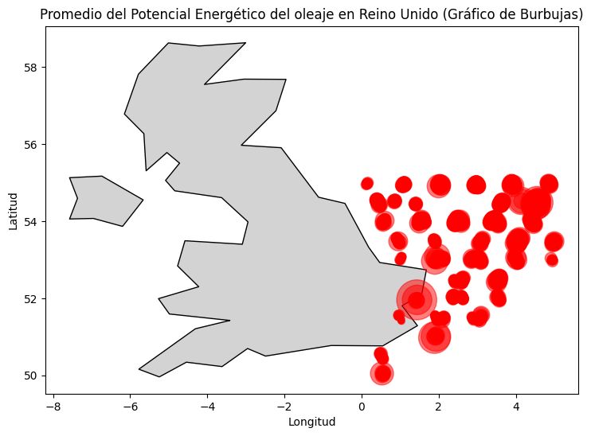
# Mapa interactivo con Folium
m = folium.Map(location=[55.0, -3.0], zoom_start=6)
# Agregar puntos al mapa interactivo
for _, row in data.iterrows():
folium.CircleMarker(
location=[row['lat'], row['lon']],
radius=3,
color='blue',
fill=True,
fill_color='blue',
fill_opacity=0.6,
).add_to(m)
# Guardar mapa interactivo en un archivo HTML
m.save("mapa_interactivo.html")
print("Mapa interactivo guardado como 'mapa_interactivo.html'")
---------------------------------------------------------------------------
KeyboardInterrupt Traceback (most recent call last)
Cell In[67], line 16
6 folium.CircleMarker(
7 location=[row['lat'], row['lon']],
8 radius=3,
(...)
12 fill_opacity=0.6,
13 ).add_to(m)
15 # Guardar mapa interactivo en un archivo HTML
---> 16 m.save("mapa_interactivo.html")
17 print("Mapa interactivo guardado como 'mapa_interactivo.html'")
File ~\miniconda3\envs\ml_venv\lib\site-packages\branca\element.py:228, in Element.save(self, outfile, close_file, **kwargs)
225 fid = outfile
227 root = self.get_root()
--> 228 html = root.render(**kwargs)
229 fid.write(html.encode("utf8"))
230 if close_file:
File ~\miniconda3\envs\ml_venv\lib\site-packages\branca\element.py:405, in Figure.render(self, **kwargs)
403 """Renders the HTML representation of the element."""
404 for name, child in self._children.items():
--> 405 child.render(**kwargs)
406 return self._template.render(this=self, kwargs=kwargs)
File ~\miniconda3\envs\ml_venv\lib\site-packages\folium\folium.py:417, in Map.render(self, **kwargs)
390 figure.header.add_child(
391 Element(
392 "<style>html, body {"
(...)
400 name="css_style",
401 )
403 figure.header.add_child(
404 Element(
405 "<style>#map {"
(...)
414 name="map_style",
415 )
--> 417 super().render(**kwargs)
File ~\miniconda3\envs\ml_venv\lib\site-packages\folium\elements.py:33, in JSCSSMixin.render(self, **kwargs)
30 for name, url in self.default_css:
31 figure.header.add_child(CssLink(url), name=name)
---> 33 super().render(**kwargs)
File ~\miniconda3\envs\ml_venv\lib\site-packages\branca\element.py:736, in MacroElement.render(self, **kwargs)
733 figure.script.add_child(Element(script(self, kwargs)), name=self.get_name())
735 for name, element in self._children.items():
--> 736 element.render(**kwargs)
File ~\miniconda3\envs\ml_venv\lib\site-packages\folium\map.py:433, in Marker.render(self)
431 if self.icon:
432 self.add_child(self.SetIcon(marker=self, icon=self.icon))
--> 433 super().render()
File ~\miniconda3\envs\ml_venv\lib\site-packages\branca\element.py:733, in MacroElement.render(self, **kwargs)
731 script = self._template.module.__dict__.get("script", None)
732 if script is not None:
--> 733 figure.script.add_child(Element(script(self, kwargs)), name=self.get_name())
735 for name, element in self._children.items():
736 element.render(**kwargs)
File ~\miniconda3\envs\ml_venv\lib\site-packages\branca\element.py:68, in Element.__init__(self, template, template_name)
65 self._template_name: Optional[str] = template_name
67 if template is not None:
---> 68 self._template = Template(template)
69 elif template_name is not None:
70 self._template = ENV.get_template(template_name)
File ~\miniconda3\envs\ml_venv\lib\site-packages\jinja2\environment.py:1208, in Template.__new__(cls, source, block_start_string, block_end_string, variable_start_string, variable_end_string, comment_start_string, comment_end_string, line_statement_prefix, line_comment_prefix, trim_blocks, lstrip_blocks, newline_sequence, keep_trailing_newline, extensions, optimized, undefined, finalize, autoescape, enable_async)
1161 def __new__(
1162 cls,
1163 source: t.Union[str, nodes.Template],
(...)
1181 enable_async: bool = False,
1182 ) -> t.Any: # it returns a `Template`, but this breaks the sphinx build...
1183 env = get_spontaneous_environment(
1184 cls.environment_class, # type: ignore
1185 block_start_string,
(...)
1206 enable_async,
1207 )
-> 1208 return env.from_string(source, template_class=cls)
File ~\miniconda3\envs\ml_venv\lib\site-packages\jinja2\environment.py:1105, in Environment.from_string(self, source, globals, template_class)
1103 gs = self.make_globals(globals)
1104 cls = template_class or self.template_class
-> 1105 return cls.from_code(self, self.compile(source), gs, None)
File ~\miniconda3\envs\ml_venv\lib\site-packages\jinja2\environment.py:766, in Environment.compile(self, source, name, filename, raw, defer_init)
764 if filename is None:
765 filename = "<template>"
--> 766 return self._compile(source, filename)
767 except TemplateSyntaxError:
768 self.handle_exception(source=source_hint)
KeyboardInterrupt:
# Mapa interactivo con Folium y gráfico de burbujas por potencial promedio
m = folium.Map(location=[55.0, -3.0], zoom_start=6)
# Agregar burbujas al mapa interactivo según el potencial promedio
for _, row in mean_potential.iterrows():
folium.CircleMarker(
location=[row['lat'], row['lon']],
radius=row['P'] / 2000, # Ajuste de escala para el tamaño de la burbuja
color='red',
fill=True,
fill_color='red',
fill_opacity=0.6,
).add_to(m)
# Guardar mapa interactivo en un archivo HTML
m.save("mapa_interactivo_burbujas.html")
print("Mapa interactivo con burbujas guardado como 'mapa_interactivo_burbujas.html'")
Mapa interactivo con burbujas guardado como 'mapa_interactivo_burbujas.html'
# Gráfico de burbujas con Plotly basado en el potencial promedio por localización
fig = px.scatter_geo(mean_potential,
lat='lat',
lon='lon',
size='P',
hover_name='lat',
size_max=20,
title='Mapa de Burbujas del Potencial Energético del oleaje en el Reino Unido')
fig.update_geos(
center={'lat': 55.0, 'lon': -3.0},
projection_scale=6
)
fig.show()